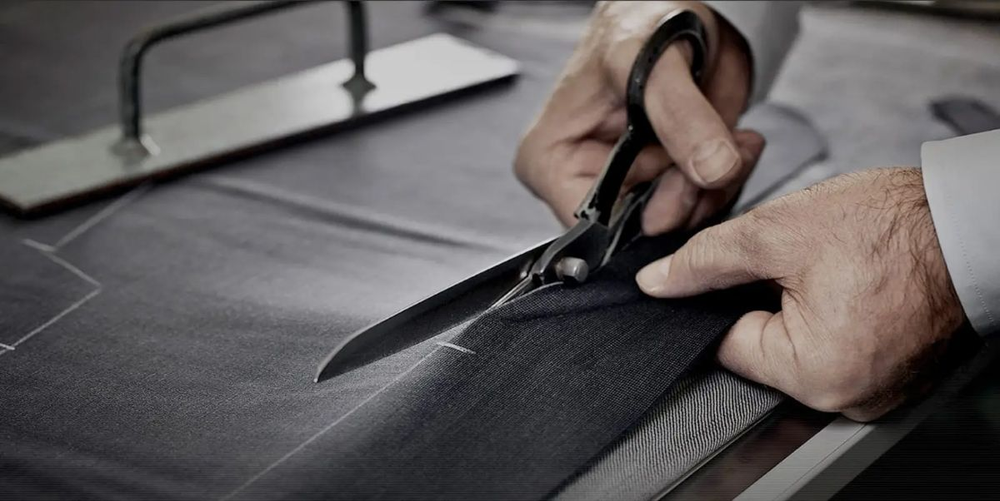

Vom Anlass zum Anzug, der wirklich passt.
Ein guter Anzug beginnt nicht beim Stoff, sondern bei der Frage, wofür Sie ihn tragen. Dieser Guide führt Sie vom Anlass über Dresscode, Schnitt und Stoff bis zu den Details — damit Sie gut vorbereitet in die Beratung kommen.
Anlass klären
Entscheidungsbaum, Dresscodes und sechs Anlass-Steckbriefe mit Farbe, Stoff, Schnitt und Details.
Details wählen
Matrix «Anlass × Option», Konfigurator-Details im Bild, Schnitt je Figur, Stoffe, Farben und Kombinationen.
Beratung vorbereiten
Checkliste zum Ankreuzen und der Ablauf im Atelier, von der Beratung bis zur Abholung.
Inhalt
03EntscheidungsbaumAnlass → Schnitt 09Optionen im BildSakko, Hose, Weste 04Dresscodes verständlichformell ↔ locker 10Schnitt & Passform je Figur5 Figurtypen 05Business & Smart CasualSteckbriefe 11StoffwahlGewicht, Saison 06Hochzeit: Bräutigam & GastSteckbriefe 12Farben & Musterje Anlass 07Black Tie & SommerSteckbriefe 13Hemd, Krawatte, SchuheKombinationen 08Matrix «Anlass × Option»auf einen Blick 14Checkliste & BeratungSeiten 14–16
Persönliche Beratung durch den Gründer. Alexander Shubin bringt über 15 Jahre Erfahrung in führenden Positionen bei Tom Ford und Prada mit. Bei The Sartorialist berät er Sie persönlich — keine wechselnden Mitarbeiter, kein Druck, nur ehrliche Beratung mit Substanz.